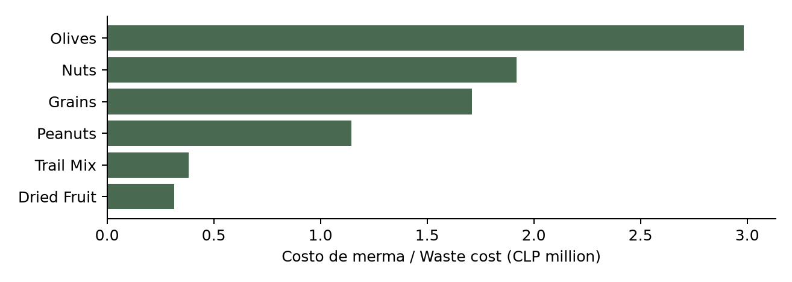

Waste and replenishment control
Prioritize an olives waste pilot before approving cold-storage investment or automated orders. The category accounts for CLP 2,984,432 in simulated cohort waste at acquisition cost.
128 products, 22 suppliers and 3,825 synthetic batches. Purchases span July 2023 to June 2025. Closures extend to 2035; full cohort results are not two-year realized sales.
Excel · SQL · Python · Power BI
